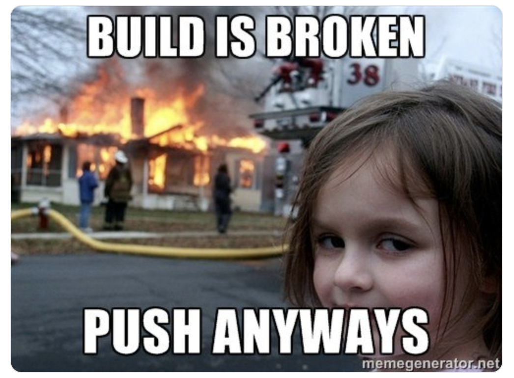
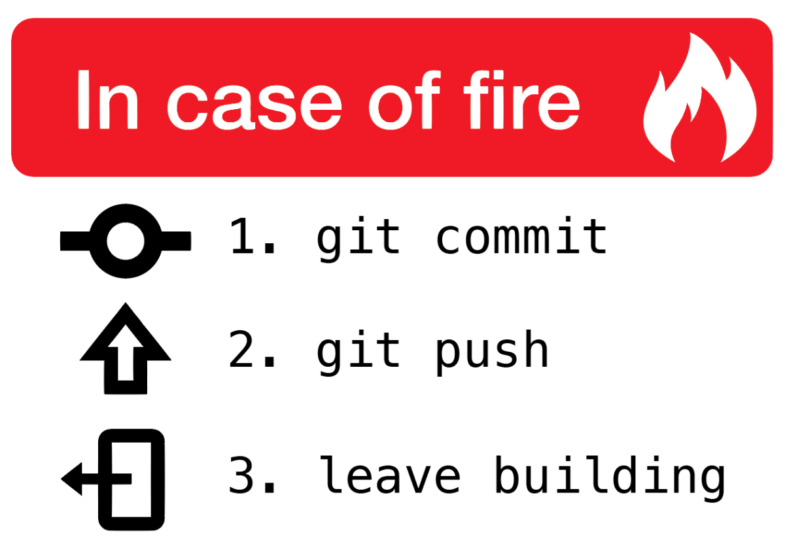
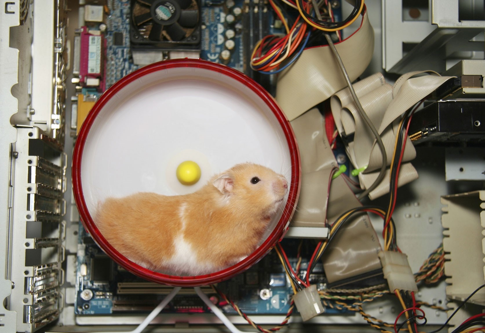
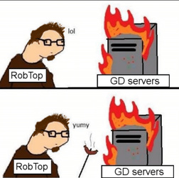
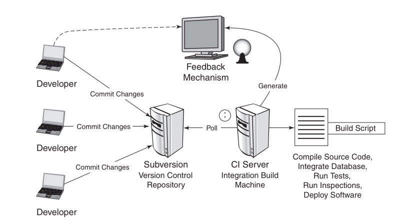
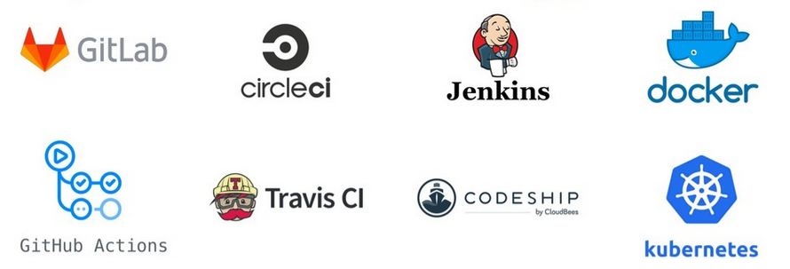

Continuous Integration & Continuous Delivery in practice
Rodrigo Amaro
30/06/2021
Hello!
Soy Rodrigo Amaro y soy sansano
Entré a Telemática el 2005
Ahora trabajo en Mercado Libre como Technical Lead
Continuous Integration??
A little of history...
.. a long long time ago
Pedrito era un desarrollador en el 2010, y trabajaba en una empresa que no
usaba ningun tipo de
Historia basada en hechos reales...
mmm.. this is a huge problem
Continuous Integration
“... a software development practice where members of a team integrate their work frequently, usually each person integrates at least daily — leading to multiple integrations per day. Each integration is verified by an automated build (including test) to detect integration errors as quickly as possible. Many teams find that this approach leads to significantly reduced integration problems and allows a team to develop cohesive software more rapidly..”
Todos los devs deben compilar el proyecto en sus propias máquinas antes de comitear su código al repositorio para asegurarse que sus cambios no rompen nada
Los devs deben subir sus cambios al repositorio de código al menos una vez al día
Compilaciones integradas ocurren varias veces al día en una máquina dedicada.
Todos los tests deben correr por cada build
Se genera un artefacto (ej:war) que puede ser testeado

Arreglar compilaciones rotas es la máxima prioridad
Se pueden generar reportes anexos (coverage, code standards, security checks).

An overview

Source: Book Continuous Integration: Improving Software Quality and Reducing RiskVersion Control Repository


CI Servers
